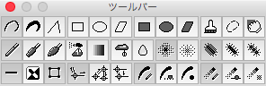

ツールバーウィンドウ
このウィンドウは画像の編集機能の選択を行います（このウィンドウではドキュメントに依存した表示は行いません）。

このウィンドウに配置している各ボタンは次のとおりです（描画機能の詳細はそれぞれの説明文にあるリンク先を参照してください）。
| 機能・形状系 | |||
|---|---|---|---|
| 直線系 |  |
自由曲線 | 説明 |
| 筆圧比例自由曲線 | 説明 | ||
| 直線 | 説明 | ||
| 枠線系 |  |
矩形 | 説明 |
 |
円／楕円 | 説明 | |
 |
平行四辺形 | 説明 | |
| 塗りつぶし系 |  |
矩形 | 説明 |
 |
円／楕円 | 説明 | |
 |
平行四辺形 | 説明 | |
| そのほか |  |
塗りつぶし | 説明 |
 |
選択範囲 | 説明 | |
 |
スクロール／移動（ずりずり） | 説明 | |
| 描画系 | |||
| 描画系 |  |
通常 | |
 |
均一濃度（描画対象の一面を均一の濃度で描画します） | ||
 |
濃度（描画対象の中心から外に向けて濃度を薄くして描画します） | ||
 |
霧吹き | ||
 |
グラデーション | ||
| フィルタ系 |  |
拡散（描画対象の一面の点を乱数によって撒き散らします） | |
 |
ぼかし（描画対象の一面の各点ごとに周囲８点との色混合をして描画します） | ||
| 補助系 | |||
| 霧吹き形状 |  |
通常 | 説明 |
 |
半値 | 説明 | |
| 霧吹き移動 |  |
常時（連続） | 説明 |
 |
二値 | 説明 | |
 |
パターンを維持 | 説明 | |
| 補助 |  |
連続線／不連続線 | 説明 |
 |
濃さのパターンを反転 | 説明 | |
| ハンドル使用／不使用 | 説明 | ||
| 原点移動 | 支点を固定 | 説明 | |
| 支点を移動 | 説明 | ||
| 形状を維持 | 説明 | ||
| 太さ |  |
筆圧に比例 | 説明 |
 |
太さを固定（スライダーの設定に依存） | 説明 | |
 |
ペン形状は選択（パターンの選択に依存） | 説明 | |
| 濃さ |  |
筆圧に比例 | 説明 |
 |
濃さを固定（スライダーの設定に依存） | 説明 | |
 |
濃さは選択（パターンの選択に依存） | 説明 | |